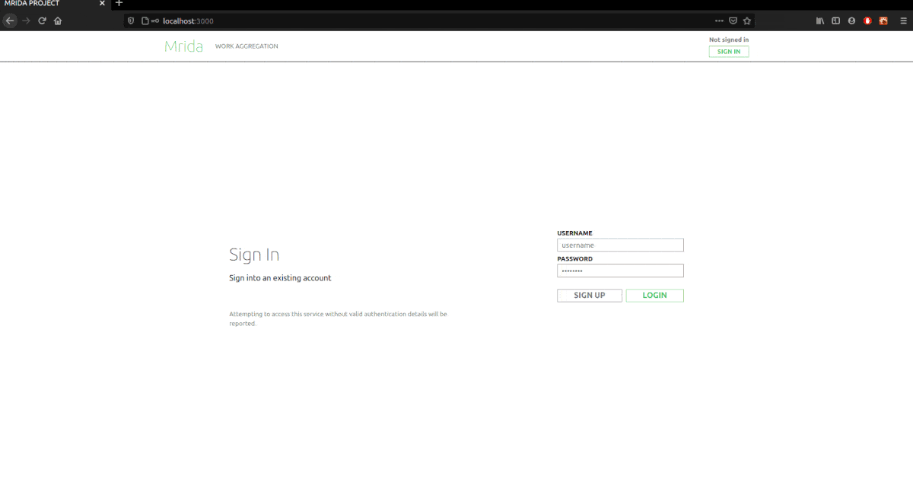

Hey!
about
I enjoy coding and the idea of giving instructions to a machine. I'm good with faces and we'd have a nice conversation if we could connect on Films, Music and Michael Scott.
Find my work on Github and LinkedIn . Experience my photography skills on Instagram. Developer and owner of Elywalls.
technical skills
I'm a 20 year old student from MU, Hyd currently persuing my Mechanical degree. I know it sounds out of place but so was I when I was choosing my major. Half way into sophomore year I started learning code because of a C programming workshop in my college. I got everything on my first try and that never happened before. Got excited whenever I saw the output in the terminal. I fell in love with the idea of instuctions and computation. Eventually I started solving tougher puzzles on codeforces,hackerrank and gained confidence. Programming became my full time thing. Taught myself Full stack and AI. By the end of fifth semester I was fluent with my skills. After too much coffee and typing I have decided to have my fun learning new things in the industry and break routine. I'd mostly be working with these technologies.
recent works
-
URBI
A Rover based intelligence using CNNs to achieve real-time detection to find more harvestable produce, and detect plant diseases in the farm. URBI the rover roams around the farm and keeps track of every plant.
Expand to vist
URBI -
Elywalls
A Full fledged E-Commerce website for artists and photgraphers to sell their work. I set this up as a start up in Sep `20. This is easily one of my biggest projects. The site is now live and taking orders.
Expand to vist
ELYWALLS -
Mrida
Built a dynamic data registry website for field agents across rural India.
Expand to vist
 MRIDA GROUP -
Tods
A neat looking, customizable To-do app to plan and keep up with your daily tasks.
Expand to vist
 TODS
TODS
education
experience
View Certificate
This project was presented at TechCrunch 2020. Integrated an AI onto a rover which is deployed in a tomato farm scanning plants. Each plant has a profile listing down details such as count of ripe tomatoes, plant health, infected disease etc. which the AI detects along with it’s location in the farm. This information is fed onto a DB everyday along with a farm summary of healthy plants and no. of ready to harvest fruits. I was the lead in this project and responsible for developing the AI, Integration of the AI onto the rover and Data pipeline flow.
View Certificate
Mrida is an NGO working towards developing rural India and creating VLE's, I had the opportunity to join as an intern and create something useful for them. Along side a fellow intern, we made a dynamic data registry tool and managed to make the website ready for professional use. I was responsible for data modeling, API development and the overall workflow. I gained a lot of professional work experience and learnt work ethics.
View Certificate
This hydroponics start-up grew really fast just like their crops. I had the opportunity to perform crop sales prediction using the ARIMA model. Later performed analysis on sales for a bigger company to co-relate their sales with Urbankisaan. I gained professional experience and a liking towards greens and getting healthy.
View Certificate
Worked along with a college friend under a Project manager in Focus. We had to decrypt C struct files coming in real-time live from a server and feed its data to a dashboard. We created the automation scripts and the dashboard. I gained professional experience.
View Certificate
As my first professional internship I had to make an App.Lead the project of Caper with a team of 5. This App is made for sports enthusiasts to help find a partner using GPS in a particular sport, matching their skill level. I developed the Frontend of the App. I gained leadership qualities and practicalities of programming an app idea.
contact
Simply email me at saakethlogs@gmail.com